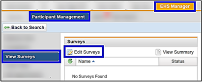
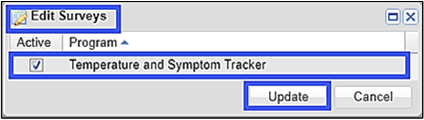
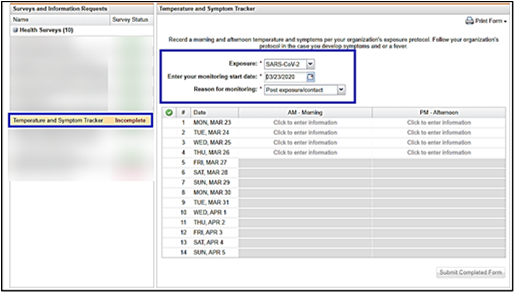
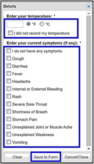
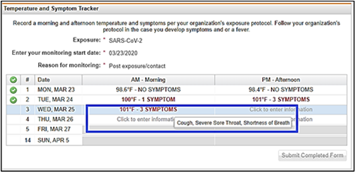

If the participant has been exposed to COVID-19 and is to be quarantined or has ongoing exposure at work, this survey is used by the participant to record symptom data.
Assigning the Temperature and Symptom Tracker to a Participant
To turn on the Temperature and Symptom Tracker survey for the participant to input their surveillance:
Open the participant’s medical record.
Click View Surveys in the left menu.
Click Edit Surveys.

Select the checkbox beside "Temperature and Symptom Tracker", then click Update.

How the Participant Uses the Temperature and Symptom Tracker
Participant will log into their My Health.
Click Health Surveys in the left menu.
Click the Temperature and Symptom Tracker.
Exposure defaults to "SARS-CoV-2".
Enter the Start Date.
The participant will select the Reason for Monitoring:
Ongoing exposure/contact.
Post exposure/contact.
The table will calculate the dates to monitor.

The participant will record their temperature and symptoms in AM and PM each day.
Click Save to Form.

Reviewing a Participant's Survey
If at any point the participant enters a temperature of 100.0° F (38 °C) or higher or checks any symptoms, a designated person(s) will be notified to review the participant’s survey. The email will contain no medical information.
To review the survey:
Open the participant’s medical record.
Click View Surveys in the left menu.
Click the Temperature and Symptom Tracker.
If an entry is red and states symptoms exist, hover over the entry to display the symptoms.

If the participant is showing symptoms, the EHS clinician/provider reviewing the survey will contact the participant and provide next steps.
Click Submit Final at the sign of symptoms or when the participant has completed the time required for self-tracking.